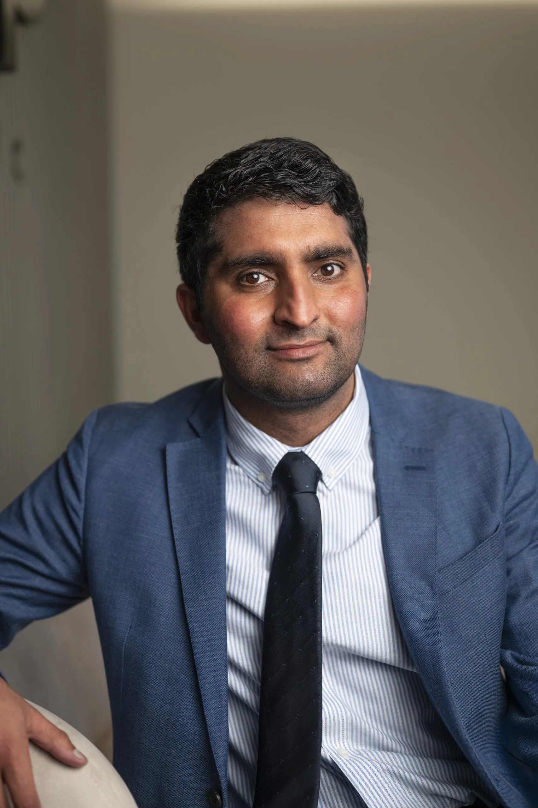

myGP Signature Longevity Assessment
Under one roof
Defining the Future of
Preventive Medicine
Consultant-led. Context-driven. Designed for longevity.
Preventive medicine must evolve.
It cannot be driven by technology alone, nor reduced to a single day of testing. It requires experienced clinical judgement, proportionate investigation and disciplined follow-up.
At myGP, our Signature Longevity Assessment is led by Family Medicine Consultants and built around long-term partnership.
Every assessment begins and ends with an extended consultation. Advanced imaging, cardiovascular diagnostics and laboratory analysis are interpreted within your full clinical context — not in isolation.
We focus on early identification of cardiovascular disease, cancer risk and metabolic dysfunction — but more importantly, we focus on modifying risk over time.
This is not reassurance theatre.
It is structured, consultant-led longevity medicine — designed to protect healthspan and sustain performance for decades to come.
Longitudinal Medicine. Beyond Screening.
Foreword
For many years, comprehensive health assessments have been presented as single-day events: advanced imaging, extensive blood testing, a detailed report. Efficient, impressive — and complete.
But modern medicine now faces a broader challenge. We are living longer than any generation before us, yet many spend the final decades managing preventable cardiovascular disease, metabolic dysfunction, cancer or cognitive decline. Lifespan has extended. Healthspan has not kept pace.
This is not a problem confined to boardrooms or senior leadership. It affects professionals, parents, retirees and active adults alike. The diseases that shape modern mortality develop silently: atherosclerosis progresses without warning, insulin resistance builds gradually, prostate and bowel pathology may remain asymptomatic for years, vascular and cerebral changes precede cognitive decline long before memory fails.
Identifying risk early matters. Managing it over time matters more. This is the difference between screening and medicine. Screening identifies a snapshot; longitudinal medicine manages trajectory.
Our Signature Assessment is led by UK-trained Family Medicine Consultants — doctors trained in whole-person, continuous care across the lifespan. We do not view investigations as isolated events. Imaging, laboratory science, physiological testing and lifestyle assessment are integrated into a structured clinical plan tailored to the individual — not their job title.
Every assessment — whether undertaken as a standalone evaluation or as part of ongoing membership — is anchored by a named Family Medicine Consultant who:
- Takes a comprehensive medical history
- Performs full physical examination
- Determines which investigations are clinically appropriate
- Interprets findings within personal risk context
- Constructs a proportionate, evidence-based plan
For some, this provides a rigorous, consultant-led baseline of structural and metabolic health. For others, it becomes the foundation of continued care, including six-month review, annual reassessment, trend analysis over time, ongoing GP oversight.
Because prevention is not a luxury service. It is responsible medicine. We believe in consultation before investigation, depth before speed, continuity before convenience.
Advanced diagnostics are valuable. But without clinical stewardship, data risks becoming reassurance rather than intervention.
Our aim is simple: to provide serious, consultant-led medicine for adults who wish to protect their long-term health — not only to live longer, but to remain strong, capable and independent.
Dr Stephen Coogan
Founder & Chief Medical Officer
myGP Clinic
They provide a measurable baseline for longitudinal tracking.
Lifestyle is upstream biology.
Family Medicine at the Centre
You will spend dedicated time with a UK-trained Family Medicine Consultant.
- Comprehensive medical and family history
- Cardiovascular and metabolic risk assessment
- Medication review
- Detailed systems enquiry
- Full physical examination
Where clinically indicated, additional targeted investigations may be recommended to ensure precision rather than excess.
Measuring Biological Reserve
- Blood Analysis: Evaluation of organ function, lipid profile, glycaemic control, inflammatory markers, hormonal balance and nutritional status.
- Core Cardiometabolic Measures: Blood pressure, BMI, waist metrics and resting pulse — foundational predictors of vascular risk.
- Grip Strength: A validated marker of muscle health and biological reserve, associated with frailty and long-term mortality risk.
- Body Composition: Assessment of visceral fat and lean muscle mass — providing insight into metabolic risk beyond weight alone.
- Spirometry & FeNO: Lung capacity and airway inflammation testing. Reduced lung function is independently associated with cardiovascular and all-cause mortality.
- Hearing & Vision Assessment: Sensory decline is recognised as a modifiable risk factor for cognitive impairment, as highlighted in the Lancet Commission on Dementia Prevention. Early detection supports neurological preservation.
Real-time structural assessment of:
- Thyroid
- Carotid arteries
- Abdominal aorta
- Liver, gallbladder and pancreas
- Kidneys and spleen
- Pelvic structures or prostate/testes as appropriate
High-resolution, radiation-free imaging of:
- Brain
- Cardiovascular structures
- Liver and abdominal organs
- Pelvic structures
Imaging informs judgement. It does not replace it.
In Partnership with Venturi Cardiology
- Echocardiogram (Echo): Assesses heart structure and valve function.
- Exercise Tolerance Test (ETT): Evaluates cardiac performance under exertion.
Several days later, you return to your Family Medicine Consultant.
All findings are integrated. Risk is interpreted in context. A personalised, proportionate health plan is agreed.
You leave with understanding — not just data.
Signature Longevity Assessment — Core Component
A complete summary of all integrated assessment elements in the Signature Longevity programme.
Meet the team


Centre of Clinical Excellence
Thellow Heath Park, Northwich Rd, Antrobus, Northwich CW9 6JB, United Kingdom
concierge@mygpclinic.co.uk